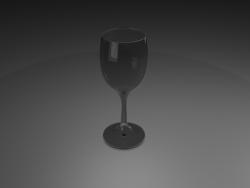

Lorsqu'on fait de la modélisation 3D, modéliser un objet simple peut vite devenir un calvaire si on ne connait pas la "bonne" technique à employer. La modélisation par révolution est une technique très simple mais qui donne de très bon résultats avec certains objets. Notez que j'utilise 3ds max 7 (en anglais) mais que ce tutoriel est compatible avec les versions plus récentes (et certainement les plus anciennes) de 3ds max. Pré-requis :
Avoir 3ds max ;
Connaître les bases (vues, menus ...) ;
Avoir un peu d'expérience avec les courbes est un plus ! ;)
Dans l'introduction, tu nous dis que la modélisation par révolution n'est bonne que pour certains objets, lesquels ?
Quelques exemples : Un exemple de ce que vous pouvez obtenir
Des verres à vin, des bols, des saladiers, des vases, etc. ;
Des pommes, des poires ;
Des barils, des tonneaux, des bouteilles ;
Des pièces d'échecs...
Je vais partir de la définition de Wikipédia d'un solide de révolution pour vous expliquer la méthode :
Citation
Un solide de révolution est engendré par une surface plane fermée tournant autour d'un axe situé dans la même plan qu'elle et ne possédant en commun avec elle aucun point ou seulement des points de sa frontière.
Quel est le rapport avec la 3d ?
C'est très simple, le résultat de la modélisation par révolution (MpR) c'est l'objet qui résulte de la rotation d'une courbe autour d'un axe. Un petit exemple avant la pratique : la poterie. Faire de la poterie c'est former un objet en lui faisant respecter une courbe alors que celui ci tourne.
Si vous connaissez bien l'objet Line de 3ds max vous pouvez passer cette sous-partie. ;)
Nous allons apprendre les bases de l'outil courbe, pour cela allez dans l'onglet Create (Créer) > Shapes (Formes) > Line (Ligne). Ensuite placez vous dans la vue de droite (left), la combinaison alt+w vous permet alors d'agrandir cette vue afin de masquer les autres (même combinaison pour retourner en mode normal).
Cliquez une première fois dans votre vue, un premier point est créé en vous déplaçant et en cliquant à nouveau vous créerez de nouveaux points. Si vous créez un point sur votre point de départ 3ds max vous proposera de fermer votre courbe (Close Spline), vous pouvez refuser ou accepter.
Mais on fait des segments là. Comment faire pour avoir une courbe ?
Pour avoir une courbe placez un premier point, déplacez le curseur, faites une pression sur la touche de votre souris (sans relâcher), vous placez un point, puis déplacez le curseur toujours sans relâcher la pression. Vous créez alors une courbe en dessinant la tangente. C'est un principe commun à beaucoup de logiciels (Illustrator, Inkscape, Photoshop ...).
Vous pouvez aussi éditer vos courbes une fois qu'elles sont créées. Pour cela allez dans l'onglet Modify (Modifier), si vous passez en mode vertex vous pouvez alors déplacer vos points. Pour les points courbes (ceux qui ont une tangente que vous avez tracée) vous pouvez sélectionner une des deux poignées afin de modifier la courbe. Si vous voulez modifier uniquement une demi-tangente (un seul coté) vous sélectionnez la poignée et vous appuyez sur la touche maj lors de la modification.
Enfin si vous avez placé un point classique et que vous voulez le transformer en point courbe : Clique droit sur le point > Bezier Corner (Courbe de Bézier). Les poignées de tangentes apparaitront et vous pourrez les modifier.
Il ne vous reste plus qu'à vous entrainer pour réussir à tracer de belles courbes.
On attaque ! :pirate: Comme nous venons de le voir, nous allons devoir utiliser une courbe pour modéliser notre objet. Je vais dans un premier temps vous montrer comment réaliser le classique verre à vin. Si vous ne savez pas à quoi ça ressemble, un ami vous donnera quelques références. Le plus simple étant d'utiliser une image prise le plus latéralement possible afin de distinguer la courbe qui nous intéresse.
On crée notre courbe. Onglet Create (Créer) > Shapes (Formes) > Line (Ligne).
C'est là que ça se complique : vous allez devoir créer une courbe qui représente le bord extérieur de votre verre. Voila la mienne, afin que vous puissiez voir à quoi cela doit (plus ou moins :-° ) ressembler :
Une fois que vous avez votre courbe, placez vous dans l'onglet d'édition et dans la liste déroulante cherchez le modificateur Lathe (Tourner), appliquez-le :
Mais c'est quoi ce truc ?
C'est possible (courant je dirais même) que vous obteniez de premier abord un objet à la forme éloignée de ce que vous vouliez. C'est parce que l'axe de rotation est mal placé. On va donc rectifier ça.
A coté du modificateur Lathe, cliquez sur le + . Normalement le mot "Axis" (axes) apparait. C'est un objet créé par le modificateur, cliquez dessus. Dans la vue de droite (left) bougez l'axe de rotation jusqu'à ce qu'il corresponde au point extrême de votre courbe (celui le plus à l'intérieur). Le résultat dans la vue Perspective devrait être alors beaucoup plus cohérent.
Maintenant nous allons voir quelques paramètres de ce modificateur.
Degrees (Degrés): Permet de régler la rotation de la courbe autour de l'axe. 360° degrés (par défaut) correspond à un tour. Si vous réduisez cet angle votre objet ne sera pas "complet", il y aura un espace ouvert.
Flip Normals (Inverser normales): Non coché par défaut. Si vous l'activez, les faces se créeront vers l'intérieur de votre courbe (vers l'axe de rotation), par défaut elles se créent vers l'extérieur.
Segments : Correspond au nombre de segments que le modificateur va créer. Réduire ce nombre conduit à un objet moins détaillé. L'augmenter mène à un maillage plus lourd mais à un objet plus détaillé.
Pour la suite de ce petit exemple j'ai mis le paramètre Segments à 32, libre à vous d'adapter cette valeur.
J'ai mal suivi, mon verre a un problème, on dirait qu'il manque des faces. C'est normal ?
En fait pour le moment votre verre n'a pas d'épaisseur, c'est à dire que les faces ne sont visibles que du coté extérieur du verre. Pour régler ce problème nous allons utiliser le modificateur Shell (épaisseur). Trouvez-le dans la liste déroulante et appliquez-le. Voila, votre verre devrait aller beaucoup mieux. Quelques paramètres du modificateur :
Inner Amount (Quantité vers l'intérieur): Indique quelle épaisseur intérieure (vers l'axe) va être donnée à votre objet.
Outer Amount (Quantité vers l'extérieur): Indique quelle épaisseur extérieure va être donnée à votre objet.
Segments : Correspond au nombre de segments que le modificateur va créer sur la face qui correspond à l'épaisseur. Augmenter ce nombre revient à durcir le bord.
Select Edges/Inner Faces/Outer Faces (Sélectionner les arrêtes, faces internes, faces externes) : Permet de sélectionner rapidement les faces.
Voila, c'est tout pour le verre ;) . Vous pouvez éventuellement ajouter un modificateur turbosmooth si vous trouvez que votre objet n'est pas assez lissé, mais je vous conseille plutôt d'augmenter le nombre de segments du lathe et d'ajouter des points à votre courbe. Le turbosmooth peut néanmoins être utile lors de MpR.
Voila, ce tuto est fini. Il ne vous reste maintenant plus qu'à vous exercer pour créer des objets plus complexes (un pion d'échec par exemple). N'hésitez pas à poser vos questions dans le forum Graphisme du Site du Zéro.
{kind=link}
{kind=link}
{kind=link}
{kind=link}
{kind=link}
{kind=link}